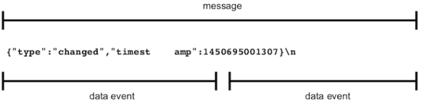
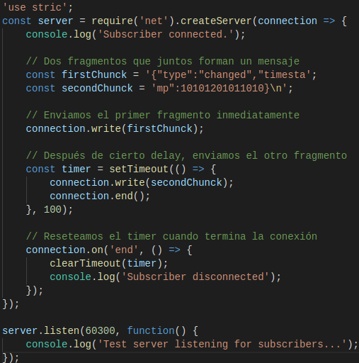

Testing Network Application Functionally
Los Functional test o pruebas funcionales nos aseguran que nuestro código se comporta de la manera que esperamos. En este apartado desarrollamos pruebas para el programa file-watching tanto para el servidor como para el cliente.
Understanding the Mesagge-Boundary Problem
Muchas veces los progrmas en red de Node.js se comunican pasando mensajes, siendo posible que estos mensajes no lleguen de una vez, sino que lleguen en pedazos, divididos en eventos de datos distintos.
El protocolo LDJ separa los mensajes con caracteres de nueva linea, estos caracteres suponen el límite entre dos mensajes.
En el servico que hemos desarrollado, cada vez que se produce un cambio, codifica y envía el mensaje a la conexión, incluyendo la nueva línea. Los límites del evento de datos corresponden con los límites del mensaje, pero podría darse el caso de que un mensaje se dividiera por la mitad y llegase como dos eventos de datos separados:

A continuación crearemos un servicio de prueba que envíe un mensaje dividido para comprobar como respondería el cliente.
Implementing a Test Service
Implementamos un servicio de prueba que divide un mensaje en múltiples fragmentos:

Primero se envia la primera parte del mensaje, y después de un pequeño margen de tiempo, se envía la segunda. Siempre que la conexión finaliza, se usa clearTimeout para cancelar la programación de la devolución de llamada, que es necesario porque una vez que se cierra una conexión, cualquier llamada a connection.write activará eventos de error.
Nos conectamos con el programa cliente para ver que sucede:

El error Unexpected token nos dice que el mensaje no está completo. El cliente trata de enviar medio mensaje a JSON.parse, que espera solo cadenas JSON completas y correctamente formateadas como entrada.
Así pues, hemos tenido éxito simulando que sucedería en el caso de que un mensaje dividido sea enviado desde servidor.